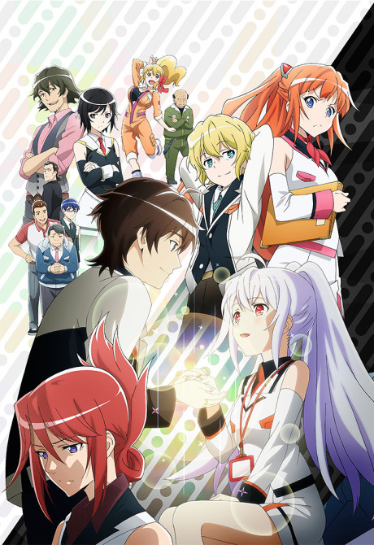
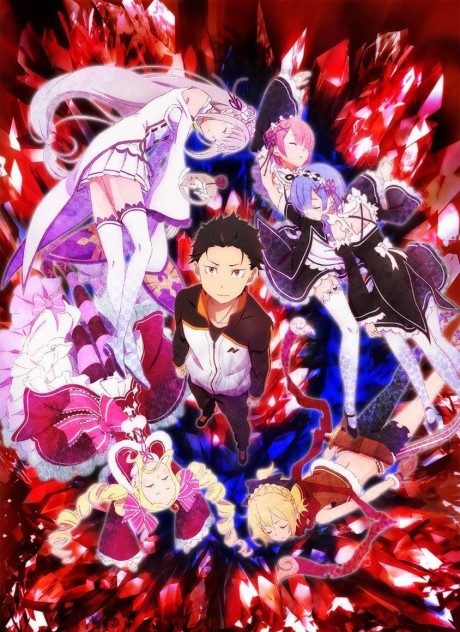

<!DOCTYPE html>
<html>
  <head>
    <!-- Google tag (gtag.js) -->
<script async src="https://www.googletagmanager.com/gtag/js?id=G-PEM3GH50WM"></script>
<script>
  window.dataLayer = window.dataLayer || [];
  function gtag(){dataLayer.push(arguments);}
  gtag('js', new Date());

  gtag('config', 'G-PEM3GH50WM');
</script>
    <title>AniCard</title>
    <link href="img/favicon.ico" rel="icon" type="image/x-icon">
    <meta name="viewport" content="width=device-width, initial-scale=1.0">
    <link rel="preconnect" href="https://fonts.googleapis.com"><link rel="preconnect" href="https://fonts.gstatic.com" crossorigin><link href="https://fonts.googleapis.com/css2?family=Inter:wght@300&display=swap" rel="stylesheet">  </head>
    <link rel="stylesheet" href="CSS/style.css">
  </head>
  <body>
    <div class="header">
    
      <div class="footer">
    <form>
      <h2> Hello! What do you want to do? </h2>
      <h3>  <a href="https://kiriyako.github.io/anicard/"> Home </a>  | <a href="anime-search"> Anime Search </a> | <a href="current"> Current Anime </a>| <a href="season-search"> Season Search</a> | <a href="top">  Top Anime </a> | <a href="random"> Random Anime | <a href = "manga"> Manga Search </a> </h3>
      
     <h3> Some recommendations for you: </h3>
     <h4> Want something musical? This one is for you! </h4>

   <br>
  Bocchi The Rock! (ぼっち・ざ・ろっく) </text>
  <br>
  <h4> Don't like music? Try This! </h4>
   <br>
  Teasing Master Takagi-san! (からかい上手の高木さん) </text>
  <br>
  <h4> Don't like teasing too? Watch this... Might make you cry, though.</h4>
   <br>
  Plastic Memories (プラスティックメモリーズ) </text>
  <br> 
   <h4> You want some Isekai? Try this </h4>
   <br>
  Re:ZERO -Starting Life in Another World- (Re:ゼロから始める異世界生活) </text>
  <br>
  <h4> Gaaaaah!!! You don't want isekai too??? Try a movie, then. Be ready to cry! </h4>
   <br>
  Violet Evergarden: the Movie (劇場版 ヴァイオレット・エヴァーガーデン) </text>
  <br>
  <P></P>
  <text>Version 2.0.0 | <a href="history"> Release History and Upcoming Plans </a>|<a href="privacy-policy"> Privacy Policy </a> | <a href="terms-and-conditions">Terms and Conditions </a> | <a href="https://github.com/Kiriyako/anicard/">Source Code </a> </text>
</div>
</body>
  </html>

